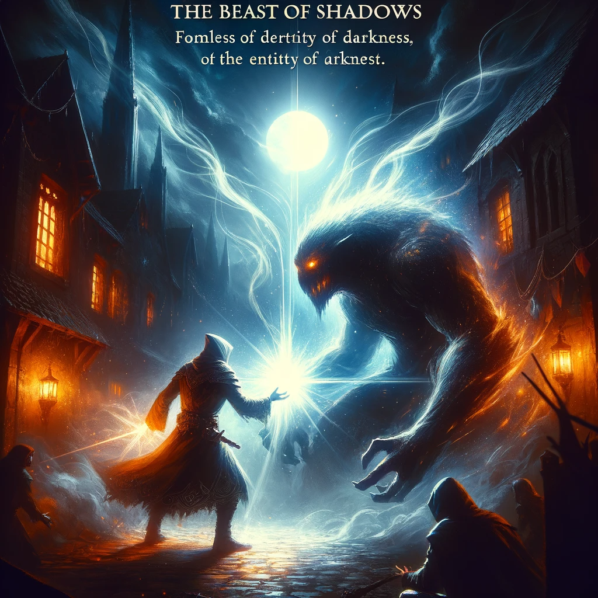
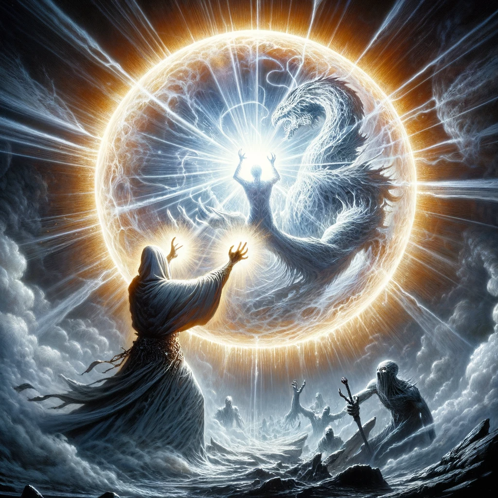

Vanquishing the Ethereal Terror
The Beast of Shadows, a formless entity, thrives in darkness. As it approaches, you feel its malevolent presence. The townsfolk cower, but you step forward, a beacon of hope in the face of this otherworldly foe.
Traditional spells seem ineffective against it, so you delve into ancient knowledge, casting a spell of pure, searing light. The Beast recoils, its form disrupted by your radiant magic.
You continue your onslaught, each spell crafted to dispel darkness and weaken the Beast. It writhes and screams, the shadows that form its body melting away under the intensity of your light.
With a final, powerful chant, you focus all your energy into a blinding sphere of light. The Beast, unable to withstand such purity, is utterly vanquished, dissolving into nothingness and leaving behind a calm, peaceful light.